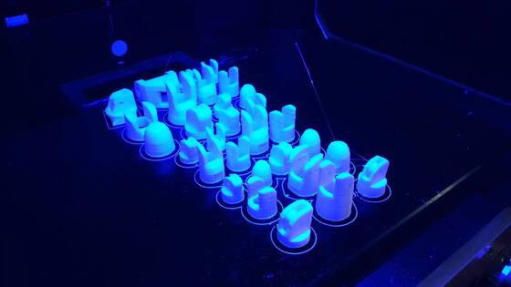

Humanoid Robot
So, this is kinda legacy page. Like a memorial for the great project, that ultimately was failed due author’s poor decisions.
Me, like (highly possible) dozen of kids wanted to build a robot. Big one, like you see in terminator. Of course I had no capabilities for it, but hey! It was a dream. And one day (2012 I guess) I stumbled upon very interesting project called inmoov . Long story short: you can 3d-print your own robot at home. When I first saw it I knew exactly what I’m going to do next. So i took all money that I had and bought 3d printer.
It took me some time to figure out how to print more or less nice details, but in any case the process has begun 
The inmoov project mentioned above had two main branches: physical parts (that should be printed) and software part (that should be used with proposed electronics). I don’t remember particular details, but in short: electronic design and software was “not so good”.
So i decided to design electronics and software by myself. And so from here the sequence of poor decisions began:
- I decided NOT to use arduino, and instead use microchip (sick!) This was horrible decision because 1) arduino may help to significantly reduce time to market 2) Whole community used arduino and by not using it I effectively excluded myself from community
- I decided to use not so popular cubieboard as onboard computer instead of raspberry pi. Again. Horrible! The support for raspberry pi was with order of magnitude better, then for cubieboard. I spent few months (!!!) Trying to make it work with canbus (and eventually switched to can-usb)
- And the most terrible, horrible mistake was: I didn’t searched for a party to join me in this project. It is hard to describe ‘why’, but I’m pretty sure that this is the most important point, that eventually killed the project
Eventually I managed to build some working parts
But I lost too much time and my faith in the project disappeared.
Lessons learned:
- Time to market is everything. Use mainstream components at first, and fix it latter
- Find a party. You can’t do everything by yourself